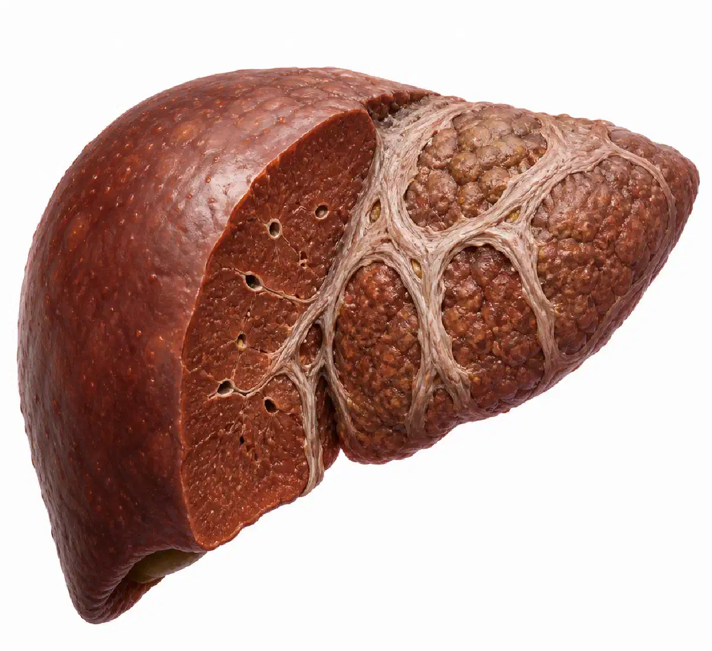

+38(068) 79 72 782
+38(068) 79 72 782Фіброз печінки: причини, симптоми, стадії та лікування
Пояснює лікар нарколог


Безкоштовна консультація, працюємо цілодобово 24/7
Пояснює лікар нарколог

Дата написання: 2 трав. 2026 р.
Останнє оновлення: 2 трав. 2026 р.
Фіброз печінки — це патологічний стан, при якому нормальна тканина печінки поступово заміщується сполучною рубцевою тканиною. Такий процес розвивається не за один день, а зазвичай формується на фоні тривалого пошкодження печінки: запалення, токсичного впливу, вірусних інфекцій, алкогольного навантаження, жирової хвороби печінки або інших хронічних захворювань. На ранніх стадіях фіброз може довго не давати виражених симптомів, тому людина часто дізнається про проблему тільки після обстеження. При своєчасному виявленні та лікуванні причини пошкодження печінки ранні стадії фіброзу можуть стабілізуватися або частково зменшуватися.
Головна небезпека фіброзу полягає в тому, що без контролю і лікування він може прогресувати. Чим більше рубцевої тканини утворюється в печінці, тим сильніше порушується її структура і робота. З часом це може призвести до цирозу, печінкової недостатності та інших тяжких ускладнень. Тому при підозрі на фіброз важливо не відкладати діагностику, а звернутися до лікаря, пройти обстеження і визначити причину пошкодження печінки.
Фіброз печінки розвивається як відповідь організму на тривале пошкодження печінкових клітин. Коли печінка регулярно піддається запаленню або токсичному впливу, організм намагається відновити пошкоджені ділянки, але при хронічному процесі замість повноцінного відновлення починає формуватися щільна сполучна тканина. Поступово вона порушує нормальну структуру печінки і погіршує її здатність виконувати свої функції.
До частих причин фіброзу належать зловживання алкоголем, хронічні вірусні гепатити B і C, жирова хвороба печінки, ожиріння, цукровий діабет, порушення обміну речовин, аутоімунні захворювання печінки, тривалий прийом деяких лікарських препаратів без контролю лікаря, токсичні ураження і спадкові захворювання. У деяких випадках на печінку впливає одразу кілька факторів, наприклад алкоголь, зайва вага і вірусний гепатит одночасно. Особливо важливо розуміти, що фіброз може розвиватися непомітно. Людина може почуватися відносно нормально, але при цьому в печінці вже відбуваються структурні зміни. Саме тому людям із групи ризику рекомендується регулярно перевіряти стан печінки, здавати аналізи і проходити обстеження, навіть якщо виражених скарг немає.
На ранніх стадіях фіброз печінки часто протікає без яскравих симптомів. Це одна з причин, чому захворювання може довго залишатися непоміченим. Печінка має значний запас міцності, тому навіть при початковому пошкодженні людина може не відчувати серйозного погіршення самопочуття. Симптоми частіше з’являються тоді, коли зміни стають більш вираженими або приєднується активне запалення.
Можливими ознаками фіброзу можуть бути постійна втома, слабкість, зниження працездатності, важкість або дискомфорт у правому підребер’ї, погіршення апетиту, нудота, здуття живота, порушення травлення, гіркота в роті, шкірний свербіж, жовтушність шкіри або склер. У деяких пацієнтів можуть з’являтися судинні зміни на шкірі, набряклість, потемніння сечі або освітлення калу. Важливо не оцінювати стан печінки тільки за самопочуттям. Відсутність болю не означає, що печінка повністю здорова. За наявності факторів ризику — вживанні алкоголю, вірусних гепатитах, ожирінні, цукровому діабеті, підвищених печінкових ферментах — обстеження потрібно проходити планово, не чекаючи виражених симптомів.
Стадії фіброзу показують, наскільки виражені рубцеві зміни в печінці і як сильно порушена її нормальна структура. При фіброзі здорова тканина поступово заміщується сполучною тканиною, яка не виконує повноцінні функції печінки. Чим більше таких змін, тим вище навантаження на орган і тим вище ризик подальшого прогресування захворювання. У медичній практиці часто використовують спеціальні шкали оцінки фіброзу, де початкові стадії вказують на мінімальне ураження, а пізніші — на значне розростання сполучної тканини і високий ризик переходу в цироз. На ранніх стадіях фіброз може розвиватися практично непомітно. Людина може не відчувати болю, вираженої слабкості або інших тривожних симптомів, а печінка ще довго зберігає здатність виконувати свої основні функції. Саме тому захворювання часто виявляють випадково — під час обстеження, здачі аналізів, УЗД або еластографії. Чим раніше виявлений фіброз, тим більше можливостей уповільнити його розвиток, усунути причину пошкодження печінки і запобігти тяжким ускладненням.
Визначити стадію фіброзу тільки за скаргами неможливо. Навіть при значних змінах людина може довго почуватися відносно нормально. Для діагностики використовуються лабораторні аналізи, показники функції печінки, ультразвукові методи, еластографія, а іноді додаткові інструментальні обстеження. Лікар оцінює не тільки стадію фіброзу, але й причину його розвитку, активність запалення, стан жовчовивідної системи, показники крові, наявність супутніх захворювань і загальний ризик прогресування.
Правильне визначення стадії фіброзу допомагає вибрати тактику лікування і спостереження. Одним пацієнтам достатньо усунення шкідливого фактора, корекції харчування, відмови від алкоголю і регулярного контролю. Іншим може знадобитися лікування вірусного гепатиту, корекція обмінних порушень, зниження ваги, медикаментозна підтримка або частіше спостереження у гастроентеролога або гепатолога. Чим точніше встановлена стадія і причина фіброзу, тим ефективніше можна вплинути на стан печінки і знизити ризик переходу захворювання в цироз.
Фіброз печінки небезпечний поступовим порушенням структури органа. Печінка відповідає за знешкодження токсинів, участь в обміні білків, жирів і вуглеводів, вироблення жовчі, зберігання вітамінів і багато інших важливих процесів. Коли здорова тканина заміщується рубцевою, печінка починає гірше справлятися зі своєю роботою.
Якщо фіброз прогресує, він може перейти в цироз. При цирозі підвищується ризик печінкової недостатності, портальної гіпертензії, асциту, кровотеч, виражених порушень обміну речовин та інших ускладнень. Також хронічні захворювання печінки можуть підвищувати ризик розвитку раку печінки, особливо при вірусних гепатитах B і C. Небезпека фіброзу також у тому, що людина може не відчувати серйозних симптомів до пізніх стадій. Тому регулярна діагностика особливо важлива для пацієнтів, які вживають алкоголь, мають вірусні гепатити, зайву вагу, цукровий діабет, підвищені показники АЛТ, АСТ, ГГТ або інші ознаки навантаження на печінку.
Алкоголь є одним із значущих факторів пошкодження печінки. При регулярному вживанні спиртного печінка змушена постійно переробляти етанол і продукти його розпаду. Це створює токсичне навантаження, викликає запалення, пошкодження печінкових клітин і може запускати процеси рубцювання тканини. На фоні тривалого вживання алкоголю можуть розвиватися жирова хвороба печінки, алкогольний гепатит, фіброз і цироз.
Ризик фіброзу підвищується при частому вживанні алкоголю, запоях, поєднанні спиртного з ліками, поганому харчуванні, дефіциті вітамінів, вірусних гепатитах та інших захворюваннях печінки. Особливо небезпечна ситуація, коли людина продовжує вживати алкоголь уже при виявлених змінах в аналізах або на УЗД. При алкогольному ураженні печінки найважливішим кроком є повна відмова від спиртного. Без усунення алкогольного навантаження лікування стає менш ефективним, а ризик прогресування фіброзу зберігається. У таких випадках пацієнту може знадобитися допомога нарколога, детоксикація, медикаментозна підтримка, психотерапія і тривале спостереження.
Вірусні гепатити B і C можуть викликати хронічне запалення печінки. Якщо інфекція тривалий час залишається без діагностики і лікування, вона може призводити до пошкодження печінкової тканини, розвитку фіброзу, цирозу та інших тяжких ускладнень. Багато людей з вірусним гепатитом можуть не мати виражених симптомів, тому тестування відіграє важливу роль у ранньому виявленні хвороби.
Гепатит C у багатьох випадках піддається лікуванню сучасними противірусними препаратами, а гепатит B можна контролювати за допомогою спостереження і терапії за показаннями. Чим раніше людина дізнається про наявність вірусу і починає спостерігатися у лікаря, тим нижчий ризик тяжкого ураження печінки. При вірусних гепатитах важливо не тільки визначити наявність інфекції, але й оцінити стан печінки. Для цього призначають аналізи крові, вірусне навантаження, маркери гепатитів, біохімічні показники, УЗД, еластографію та інші обстеження. Це допомагає лікарю зрозуміти, чи є фіброз, наскільки він виражений і яка тактика лікування необхідна.
Діагностика фіброзу печінки починається з консультації лікаря. Спеціаліст уточнює скарги, спосіб життя, вживання алкоголю, перенесені захворювання, прийом ліків, наявність вірусних гепатитів, хронічних хвороб і спадкових факторів. Після цього призначаються лабораторні та інструментальні обстеження. До базових аналізів зазвичай належать печінкові проби: АЛТ, АСТ, ГГТ, білірубін, лужна фосфатаза, альбумін, показники згортання крові, загальний аналіз крові та інші дослідження. Також можуть призначатися тести на вірусні гепатити, показники обміну заліза, аутоімунні маркери, ліпідний профіль і аналізи, пов’язані з обміном глюкози. Для оцінки структури печінки використовують УЗД, еластографію, іноді МРТ, КТ або інші методи. Сучасні неінвазивні тести, включаючи сироваткові маркери та вимірювання жорсткості печінки, допомагають виявляти виражений фіброз і оцінювати ризик прогресування без необхідності одразу проводити інвазивні процедури.
Еластографія печінки — це сучасний неінвазивний метод діагностики, який допомагає оцінити жорсткість печінкової тканини. Чим щільніша тканина, тим вища ймовірність вираженого фіброзу. Метод часто використовується для спостереження пацієнтів з вірусними гепатитами, жировою хворобою печінки, алкогольним ураженням та іншими хронічними захворюваннями.
Процедура зазвичай проходить швидко, без болю і не потребує пошкодження тканин. Пацієнт лягає на кушетку, лікар встановлює датчик в області печінки і проводить вимірювання. Результат допомагає оцінити ступінь фіброзу, але інтерпретувати його повинен спеціаліст, тому що на показники можуть впливати запалення, застій жовчі, ожиріння, прийом їжі перед обстеженням та інші фактори. Еластографія не замінює повністю консультацію лікаря і лабораторні аналізи. Вона є частиною комплексної діагностики. Найбільш точну картину можна отримати тільки при зіставленні даних еластографії, біохімії крові, УЗД, анамнезу, симптомів і факторів ризику.
Можливість відновлення печінки залежить від стадії фіброзу, причини захворювання, активності запалення і того, наскільки швидко пацієнт почав лікування. На ранніх стадіях фіброз може стабілізуватися або зменшуватися, якщо усунути пошкоджувальний фактор і контролювати основне захворювання. Наприклад, відмова від алкоголю, лікування вірусного гепатиту, зниження ваги і корекція обмінних порушень можуть уповільнити або зупинити прогресування процесу.
На пізніх стадіях, особливо при цирозі, зміни стають більш серйозними. У таких випадках завдання лікування — уповільнити прогресування, знизити ризик ускладнень, підтримати роботу печінки і покращити якість життя пацієнта. Навіть при вираженому фіброзі спостереження у лікаря має велике значення, тому що дозволяє вчасно виявляти ускладнення і коригувати терапію. Самостійно «почистити» печінку або прибрати фіброз народними засобами неможливо. Різні добавки, трави і неперевірені препарати можуть не тільки не допомогти, але й посилити навантаження на печінку. Лікування має бути спрямоване на конкретну причину захворювання і проводитися під контролем спеціаліста.
Лікування фіброзу печінки завжди починається з пошуку і усунення причини пошкодження. Якщо фіброз пов’язаний з алкоголем, головною умовою стає повна відмова від спиртного. Якщо причиною є вірусний гепатит, лікар підбирає противірусну терапію або спостереження за показаннями. При жировій хворобі печінки важливі зниження ваги, корекція харчування, фізична активність і контроль цукру крові.
Медикаментозна терапія підбирається індивідуально. Лікар може призначати препарати для лікування основного захворювання, корекції обмінних порушень, підтримки функції печінки, зменшення запалення або профілактики ускладнень. Але універсальної таблетки, яка однаково ефективно прибирає фіброз у всіх пацієнтів, не існує. Велике значення має регулярне спостереження. Пацієнту важливо контролювати аналізи, проходити УЗД або еластографію, дотримуватися рекомендацій щодо харчування і способу життя. Чим відповідальніше людина ставиться до лікування, тим вищий шанс уповільнити прогресування фіброзу і зберегти функцію печінки.
Дієта при фіброзі печінки повинна знижувати навантаження на організм і допомагати підтримувати нормальний обмін речовин. Харчування бажано зробити регулярним, збалансованим і помірним за калорійністю. Особливо важливо уникати переїдання, великої кількості жирної, смаженої, копченої, занадто солоної і важкої їжі.
У раціоні повинні бути присутні нежирні джерела білка, овочі, крупи, продукти з клітковиною, помірна кількість корисних жирів, достатня кількість рідини. При зайвій вазі важливо знижувати масу тіла поступово, без жорстких дієт і голодування. Різкі обмеження можуть погіршити самопочуття і негативно вплинути на обмін речовин. Алкоголь при фіброзі печінки повинен бути повністю виключений. Навіть невеликі дози спиртного можуть підтримувати запалення і прискорювати пошкодження печінки, особливо якщо вже є хронічне захворювання. Також не варто самостійно приймати БАДи, «чистки печінки» або препарати без призначення лікаря.
Спосіб життя відіграє важливу роль у контролі фіброзу печінки. Пацієнту важливо відмовитися від алкоголю, нормалізувати харчування, контролювати вагу, підтримувати фізичну активність і регулярно спостерігатися у лікаря. Такі заходи допомагають знизити навантаження на печінку і зменшити ризик прогресування захворювання.
Фізична активність повинна бути помірною і регулярною. Підійдуть прогулянки, лікувальна гімнастика, плавання, легкі тренування без перевантажень. Особливо корисний рух при жировій хворобі печінки, зайвій вазі і порушеннях обміну речовин. Але при виражених захворюваннях печінки режим навантаження краще узгодити з лікарем. Також важливо уважно ставитися до ліків. Деякі препарати можуть впливати на печінку, особливо при неправильному дозуванні або поєднанні з алкоголем. Тому при фіброзі печінки будь-які ліки, знеболювальні, антибіотики, гормональні засоби або добавки бажано приймати тільки після консультації зі спеціалістом.
Звернутися до лікаря потрібно при постійній слабкості, важкості в правому підребер’ї, нудоті, зниженні апетиту, жовтушності шкіри або очей, шкірному свербежі, набряках, потемнінні сечі, зміні кольору калу, підвищених печінкових показниках в аналізах або виявлених змінах на УЗД. Також консультація необхідна людям, які вживають алкоголь, перенесли вірусні гепатити, мають зайву вагу, цукровий діабет або приймають ліки, здатні впливати на печінку.
Особливо важливо не відкладати обстеження, якщо вже був поставлений діагноз «фіброз печінки» або лікар раніше говорив про підвищені АЛТ, АСТ, ГГТ, білірубін. Навіть якщо самопочуття залишається нормальним, захворювання може прогресувати без яскравих симптомів. Отримати консультацію і пройти обстеження печінки можна в таких містах як: (Київ, Харків, Одеса, Дніпро, Львів, Запоріжжя, Черкаси). Своєчасне звернення допомагає визначити причину пошкодження печінки, оцінити стадію фіброзу і підібрати правильну тактику лікування.
Контроль стану печінки при фіброзі повинен бути регулярним. Частота обстежень залежить від стадії захворювання, причини фіброзу, віку пацієнта, наявності супутніх захворювань і результатів попередніх аналізів. Одним пацієнтам достатньо планового спостереження, іншим потрібен частіший контроль і розширена діагностика. Зазвичай лікар може рекомендувати періодично здавати біохімічний аналіз крові, загальний аналіз крові, показники згортання, маркери вірусних гепатитів, проходити УЗД печінки і еластографію. За необхідності призначаються додаткові дослідження, щоб оцінити стан жовчовивідних шляхів, селезінки, судин печінки і ризик ускладнень.
Головна мета контролю — не просто спостерігати за цифрами в аналізах, а не допустити прогресування хвороби. При правильному підході можна вчасно помітити погіршення, скоригувати лікування, змінити спосіб життя і знизити ризик переходу фіброзу в більш тяжкі стадії. Чим раніше людина починає займатися здоров’ям печінки, тим більше шансів зберегти її функції і уникнути небезпечних наслідків.

Статтю перевірено експертом
Могучев Станіслав
Лікар-терапевт, ординатор
Можливо цікава стаття:
Янтарна кислота, Бетаргін та Ентеросгель при алкогольної інтоксикації

Так, ми суворо дотримуємося повної конфіденційності на всіх етапах лікування. Інформація про пацієнта, діагноз та проходження терапії не передається третім особам. Звернення до нас не тягне за собою постановку на облік. Ви можете бути впевнені у безпеці та анонімності.
Програма лікування розробляється індивідуально після консультації з фахівцем. Враховуються вид залежності, її тривалість, фізичний та психологічний стан пацієнта. Такий підхід дозволяє підвищити ефективність терапії та знизити ризик зриву. Ми не використовуємо шаблонні рішення.
Так, ми супроводжуємо пацієнтів і після основного курсу лікування. Проводяться консультації, рекомендації щодо адаптації та профілактики рецидивів. За потреби можлива подальша психологічна підтримка. Це допомагає зберегти результат та повернутися до повноцінного життя.
Номер телефону:
+380 (68) 797 27 82
+380 (50) 021 69 57
Адресу наркологічного центра вашого міста уточнюйте за
телефоном
Працюємо: Київ, Одеса, Львів, Харків, Дніпро, Запоріжжя,
Черкасах, Чугуєві, Чорноморську, Кам'янському
Telegram: t.me/umbrellaplus
Графік работы: Цілодобово